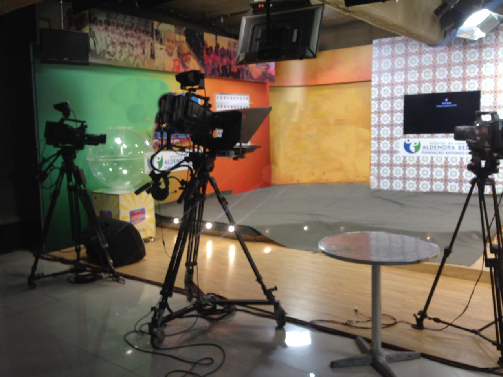
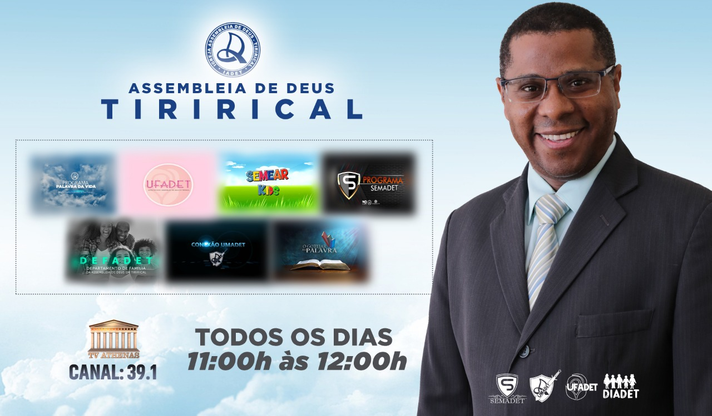
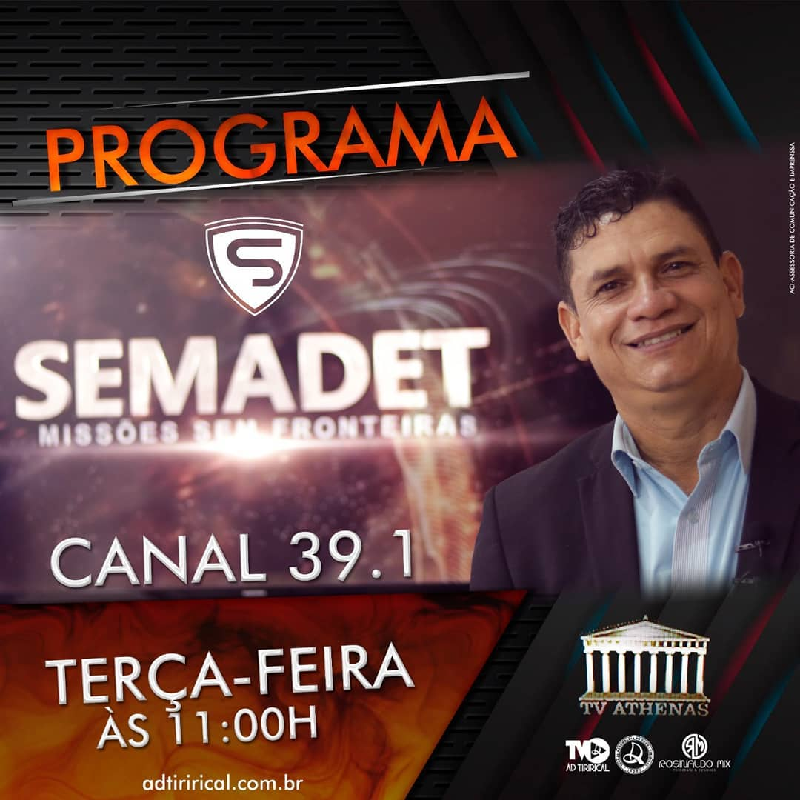
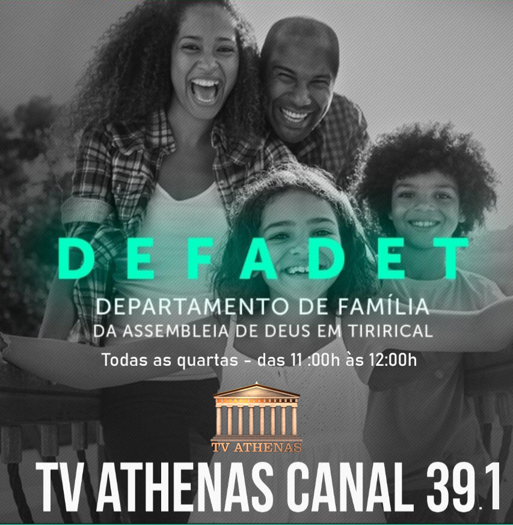
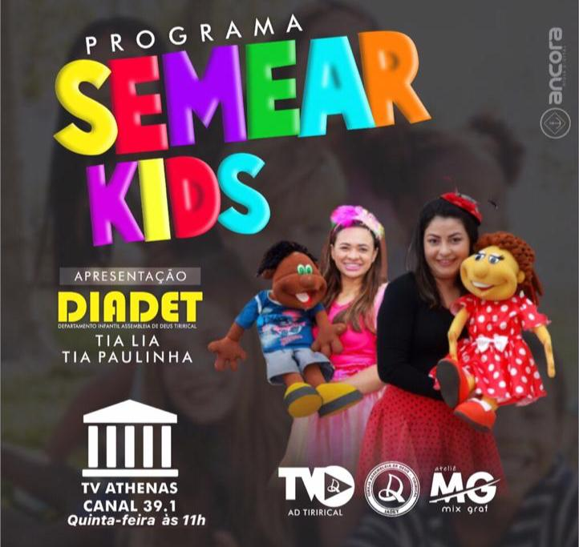
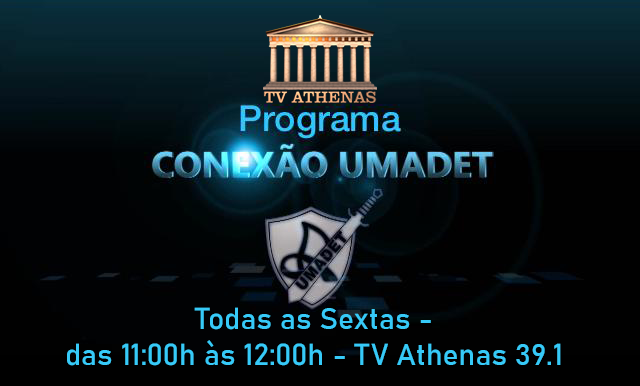

Conheça a TV athenas - o canal da benção
Saiba maisTV Athenas 39.1 - Digital
Conheça alguns de nossos estúdios
,- 
-

Programação atual da TV Athenas
-

Palavra da Vida – a palavra de Deus ministrada pelo pastor Osiel da Assembléia de Deus.
-

Semadet - missões sem fronteiras, um programa missionário com clipes musicais, entrevistas e a palavra de Deus para edificar sua vida.
-

Todas as quartas-feiras de 11:00h às 12:00h
-

Todas as quintas-feiras de 11:00h às 12:00h
-

Todas as sextas-feiras de 11:00h às 12:00h
-

Todos os sábados de 11:00h às 12:00h
-

Café com Sammy – programa de talk show, entrevistas com personalidades da música.
-

Afé Music – programa de vídeo clipes apresentado pelo pastor DD Junior.